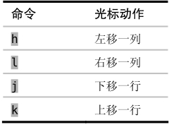
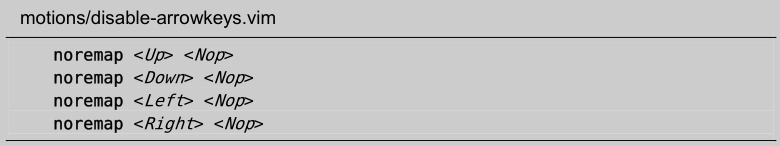

技巧46让手指保持在本位行上
Vim 针对盲打人员进行了优化。因此，你要学会让手不离开本位行就可以移动光标，只有这样你才能更快地操作 Vim。
想成为盲打人员，要学的第一件事就是让手指始终停留在本位行(1)（home row）上。对于 Qwerty键盘而言，就是说你左手的手指应该落在a、s、d、f键上，而右手的手指则应该落在j、k、l、;键上。保持好这一位置后，我们不用移动手掌或看着手指，就可以输入键盘上的任意按键了，这就是理想的盲打姿势。
像其他文本编辑器一样，Vim也允许我们使用光标键来移动光标。不过，Vim 还提供了另外一种方式，即使用h、j、k、l键来移动光标。这些键的用途如下：

无可否认，这些动作命令与光标键相比，用起来不太直观。j和k键并列在一起，很难记住哪个向上移哪个向下移；并且，l键并不是向左移，而是向右移。这些键之所以这样分配是缘于历史原因，因此你用不着费劲去探究其中的逻辑(2)。
如果你正在努力记哪个键是做什么的，那么这里给出的一些提示也许会有帮助。字母j看起来像一个向下的箭头，因此它向下移；而在Qwerty键盘上，h键和l键分别位于彼此的左侧和右侧，与它们移动光标的方向一致。
尽管h、j、k及l最初看上去不那么直观，但花点时间学会用它们却绝对值得。要想按到光标键，你非得把手从本位行上移开才行；而h、j、k 和l键却能很容易地按到，因此你用不着移动手掌就能移动光标。
可能听起来这省不了多少时间，不过毕竟积少成多。一旦你养成了用h、j、k和l进行移动的习惯，再去使用其他依赖光标键的编辑器时，就会觉得不自在。你肯定会感到惊讶，当初怎么能忍受得了这么久！
让右手待在它该在的位置上
在 Qwerty 键盘上，j、k和l键刚好在右手的食指、中指和无名指下方。我们也需要用食指去按h键，不过得伸出手指才能按到它。有些人把这当成麻烦，为了解决这个问题，他们建议把整个右手向左移动一格，这样一来，h、j、k和l 键就分别有一根手指与之对应了。不过，千万不要这样做。
我们将在本章剩下的内容中看到，其实 Vim 提供了一些更快的移动方式。如果你在一行中连续按了两次以上的h键，那就是在浪费时间。对于水平方向的移动而言，你也可以用面向单词的动作命令，或是用字符查找动作命令来更快地进行移动（参见技巧48及技巧49）。
因此，我通常只用h和l键来解决“差一错误” (off-by-one errors(3))。也就是说，只有在距目标差一两个字符时，我才会用到这两个键。除此之外，我基本不碰它们。鉴于我很少使用h键，因此我很高兴在 Qwerty 键盘上要伸出手指去够它；而另一方面，由于我经常会用到字符查找命令（参见技巧49），所以我很高兴;键恰好在小指下方。
戒掉使用光标键的习惯
如果你发现自己很难改掉使用光标键的习惯，那么可以试着把以下几行加到你的 vimrc 里：

这几行会把光标键映射为什么都不做。这样，你每次移动手去够光标键时，就会受到提醒：你应该让手停留在本位行上。如此一来，用不了多久你就会进入状态，开始用h、j、k及l了。
我不建议你把这些映射项永远留在vimrc里，只需保留足够长的时间，长到足以让你养成使用h、j、k及l的习惯就行了。此后，你就可以考虑把这些光标键映射成更有用的功能。